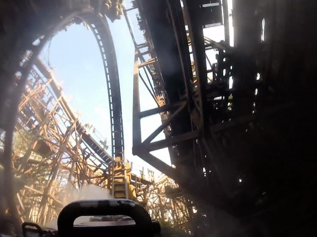
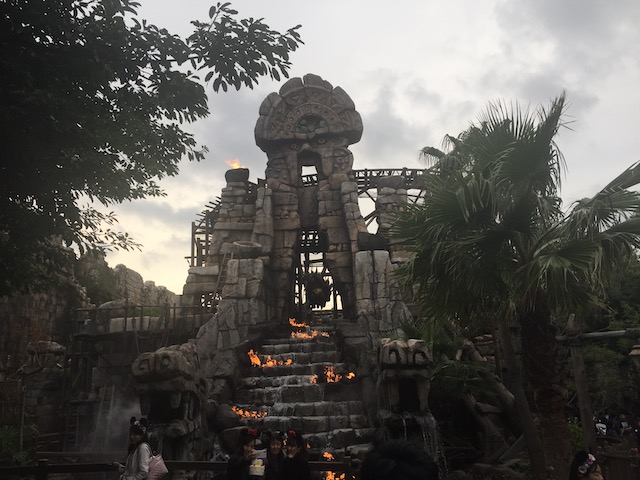
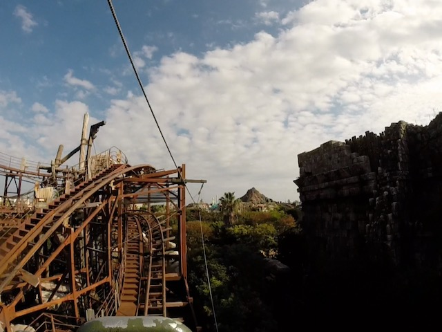
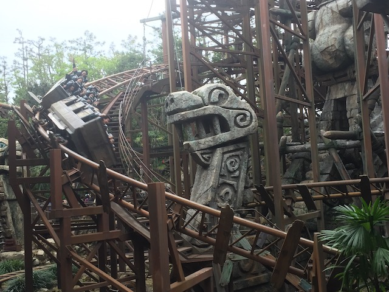
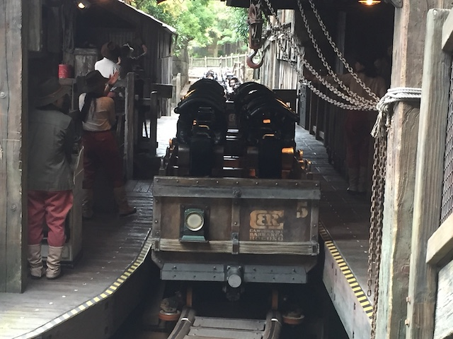
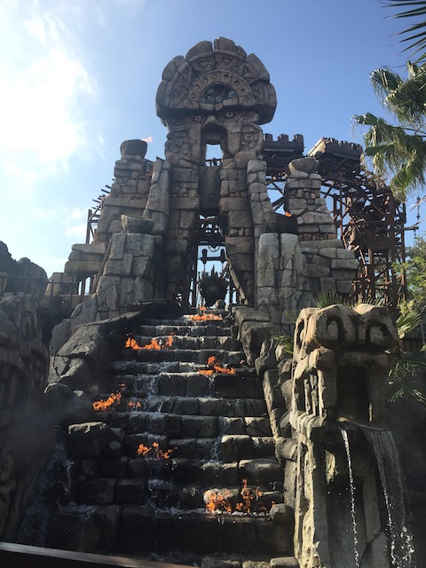
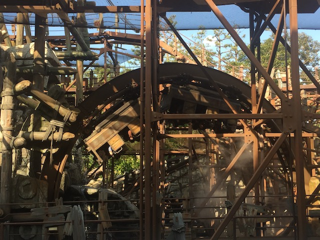
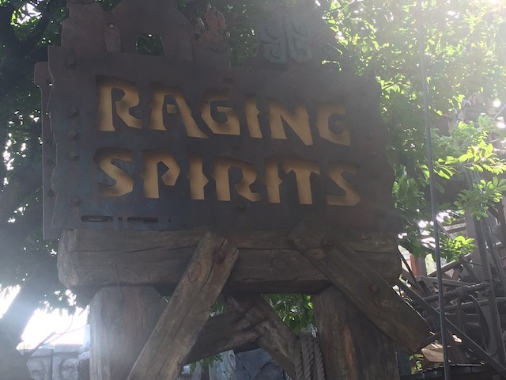

| |
Raging Spirits Review

We're here at Tokyo DisneySea. Today's ride we'll be reviewing is Raging Spirits. This is the parks big coaster, and when you look at it, it sort of stands out and is something that you wouldn't expect Disney to build. This is a Pinfari Looper! OK. Not literally. Its made by Intamin. But the exact layout of this ride is that of a freaking Pinfari Looper! In the best park in the world! The park so dripping with theming! This is their big coaster!? Well, a couple things. #1. This may be their big coaster, but this is NOT their star attraction, There are MUCH better rides at Tokyo DisneySea. #2. It's very well themed and blends in with the park beautifully. #3. It's fun! It's legitimately fun. Raging Spirits is smooth as glass. I know I heard a lot of people complaining that the clone, Indiana Jones @ Disneyland Paris is rough (It was closed when I visited), but Raging Spirits is a legitimately fun ride. But enough chit chat. Let's ride! Hop in the cars, pull down the restraints, and we're off! We roll around a turn, getting a great view of both some great theming, such as sratues, as well as Raging Spirits, before we head up the lifthill. We head up, go around a turn, before heading down a drop. It's not very big, but it gives us some speed. We then head up another hill, go around another turn, through some straight track. Go through a small little dip. Nothing crazy or extreme, but fun. Dip back up, and go through another turn right under our turn from the lifthill to the first drop. And then some straight track. Really feels like just some autocomplete from RCT3. But when that's done, we finally get to the big part of the ride. We head down a spiral drop, very similar to those on Pinfari Loopers, go through a cloud of mist, and FLIP!!! We go upsidedown. I know this part of the ride is famous with locals because it goes upsidedown. But that's not special. And I'm not just saying that as a coaster enthusiast who's ridden over 600 coasters across North America and Eurasia. If you're someone who is poor and can't leave the Tokyo Metropolitan Area, you could just as easily go upsidedown on Gekion Live Coaster @ Sega Joyopolis. But if it HAS to be a vertical loop, then you could just as easily do the Standing & Loop Coaster @ Yomiuriland. And again, this assumes that Fuji-Q Highlands is too far away from you. But it's still a lot of fun. We then rise up another small hill and into another FAKE HELIX OF DEATH!!! MEOW!!! Go around a turn, rise up, go through another foggy turn, nd hit the brakes. Well, that was fun. Nothing special. There are better Disney coasters with inversions, such as Rock'N'Rollercoaster and Incredicoaster (California Screamin). But it's still fun. It's not one of the best rides at Tokyo DisneySea by any means (Journey to the Center of the Earth, Tower of Terror, Sinbad's Storybook Voyage, etc). Definetly give it a ride if visiting the park. It has a Single Riders Line, you're probably not gonna wait anything for it anyways.
6/10
Location: Tokyo Disney Resort
Opened: 2005
Built by: Intamin
Last Ridden: November 13, 2018
Raging Spirits Photos







Home
|